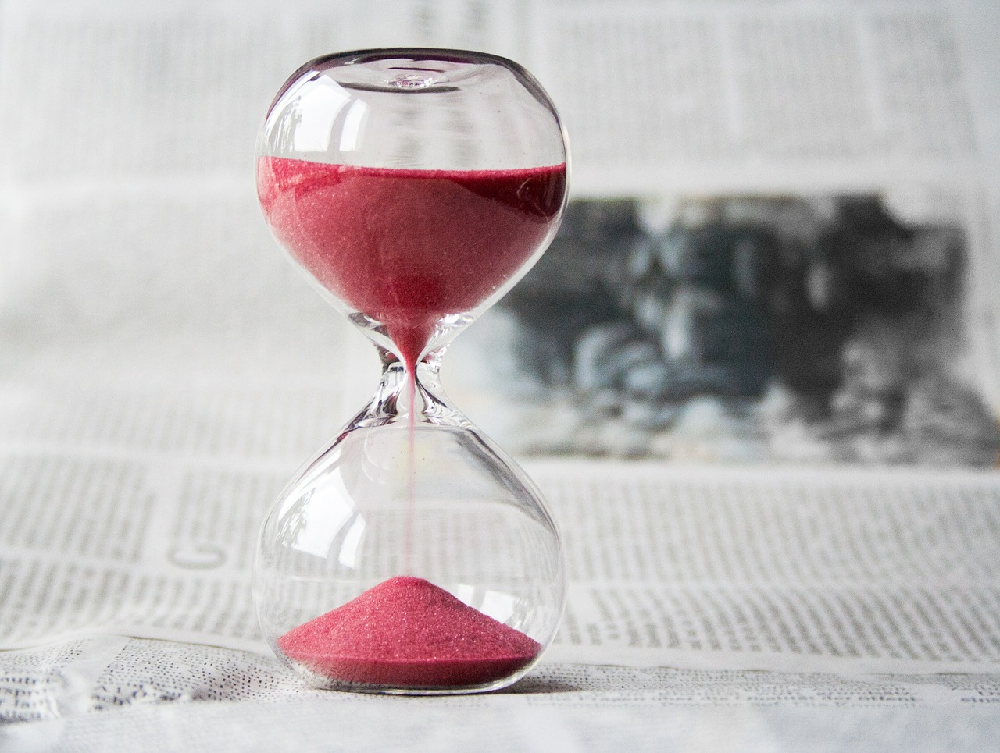

Time is always running out.
There’s simply not enough of it. Not enough for me to learn a new language, not enough for me to start a sideline, not enough for me to be happy. There’s always something I need to do, something more urgent, something that I am responsible for.
Yet, I wished I lived a little. Maybe, book an impromptu trip out of the country without knowing the destination? Or just say, “screw this shit,” and do something else that I love?
When you have played by the rules all your life, followed the guidelines of society to every letter, don’t you ever have the desire to just do something dumb for once without considering the consequences? Definitely, you grew up sensible and law-abiding; you turned off the lights to save on electricity bills and queued up orderly before the MRT doors.
Don’t you ever want to do something embarrassing once, and refuse to be judged for it?
Yes, time is never enough.
It stops for no one.
But I do wonder - if there will truly be enough of time. Or even a right time.
The problem is we try to fit way too many things into a small container of 24 hours. Its obvious we can’t get a bigger container, so some things will have to go - because we simply just can’t fit everything.
We have to make a decision, you and I. To simplify, it stems down to prioritization. Start by being mindful of how you manage your time today. Take note of what you are putting into the container of yours. How much time are you spending on social media? How much computer games or TV are you engaging in? How much time do you spend driving around or commuting? How much sleep do you really need? The list is inexhaustive.
At the end of it, you might come to the realization that you have been trying to fit a lot of junk into the same container of yours. Every day.
Back in university, I will often sit at the back of dusty lecture halls doodling on my freshly printed notes. The mindless drone of my Professor’s voice as a backdrop. The clickety clack of hurried typing on the laptops all around. Sinking into a daze and poring through the vacation-filled photos of instagram influencers and famous entrepreneurs, imagining how great life would be without all these adult responsibilities… Ah, fantasies. I am not cut out for this life of 8am lectures and endless exams. But you could be.
Somehow, maybe famous people - like Mark Zuckerberg, Elon Musk and Steve Jobs - are where they are today because they never internalised that they could possibly, fail. They never learnt to back down from a fight, nor were they influenced by how some things are impossible, unattainable.
And that was how it started. In the middle of a lecture on market disruptions, in this swamp of humdrum theories squatteth the toad of truth - the crux of success. Maybe the greatest disruptors of all time started with just one, and only one business model. Its called, “jump into the fucking ocean and start paddling, hard.”
We are all masters of good and sensible life advice. If someone ranted to you about a bad relationship, you tell the person you are beautiful, you are better on your own. Before you commit to something, always remember to weigh the pros and cons first. Have a backup plan, have a failsafe. You must go to a university - the paper qualification will secure you jobs next time.
And you know what? I hate it. I hate all these reasonable, safe and sensible life advice. It’s merely a recipe to leading a smart life, but not necessarily on how to live your life well.
Time is always running out.
There will never be enough time.
There will never be the right time for me to do the crazy, reckless thing I always wanted, where I am not afraid to be labelled or critiqued. They never will be, until you start living; you start to do the things you never thought you deserve to. And when you finally decide to sink your teeth into the juciest peach of life and feel the rush of juices flowing down your chin, that’s when you truly have lived.
This life is yours. Uniquely yours.
Enough with the excuse of not enough time, of time is always running out for you to do the things you want. To hell with the fear of failing, with swaying from the beaten path of normalcy. That’s how life should have been, fuck it, and just go for it. Which is better, to have done and regretted, or haven’t at all?